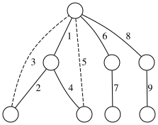

But wait, the user's original Persian has "==================" which is 20 "=". The English title "Idea Cultivation Workshop" is 25 characters. So the correct underline is 25 "=". Hence:
Idea Cultivation Workshop¶
Trees are known as the simplest connected graphs. In other words, a tree acts like the skeleton of a graph. We know every connected graph has at least one spanning tree because we can construct it by removing edges from cycles until none remain. The choice of which edges to remove at each stage influences the structure of the resulting spanning tree. Specifically, the DFS and BFS algorithms produce two distinct and interesting spanning trees with fascinating properties!
In this section, we discuss problems that will help you develop better intuition about trees while enhancing your problem-solving perspective and skills. Make sure to think deeply about each problem before reading the solutions!
Square Eraser¶
We have a square eraser device that can, in each step, consider a \(C_4\) (cycle of 4 nodes) in the graph and delete one of its edges. Initially, we are given a complete graph \(K_n\) with \(n \geq 4\). Our goal is to use the square eraser in such a way that the number of remaining edges in the graph is minimized. Find this minimum number.

Solution: The problem reduces to iteratively breaking 4-cycles while maximizing edge removal. The minimal number of edges depends on parity conditions of \(n\). For even \(n\), the minimal edges are \(n-1\), and for odd \(n\), it is \(n\). The proof involves partitioning the graph into edge-disjoint 4-cycles and analyzing residual edges.
Solution
~~~~
The square eraser does not compromise two properties:
1. The graph's connectivity is preserved.
2. It will always retain an odd cycle.
The second point might be slightly harder to grasp initially. You may have first guessed the answer should be :math:`n-1` (due to the first property), but no matter how you use the square eraser, one troublesome cycle remains!
For the second property, first note that since :math:`n \geq 3`, there must initially be an odd cycle. Suppose we delete edge :math:`AB` from square :math:`ABCD`, and the previous odd cycle is destroyed. Now traverse the original odd cycle but replace edge :math:`AB` with the path :math:`ACDB`. Clearly, this results in an odd walk. As stated in Chapter 1, every odd walk contains an odd cycle within it!
From these two points, we conclude:
- The graph must have at least :math:`n-1` edges to remain connected.
- Since a connected graph with exactly :math:`n-1` edges is a tree (which has no odd cycles), it must have at least :math:`n` edges.
We leave constructing an example with exactly :math:`n` edges as an exercise for the reader!
We have a connected graph with \(m\) edges. We want to assign a permutation of the numbers 1 to \(m\) to the edges of this graph such that for every vertex \(v\) with degree greater than 1, the GCD of the numbers on the edges adjacent to \(v\) equals 1.
Solution¶
To solve the problem, we use the fact that the GCD of any two consecutive numbers equals 1.
Start a DFS from an arbitrary vertex. Assign 1 to the first edge we encounter, 2 to the second edge, and so on. What does "encountering an edge" mean? Suppose we're on vertex \(u\) during DFS. We examine all adjacent edges of \(u\) in order. When we reach edge \(uv\), if no number has been assigned to this edge yet, we assign a number. Then if vertex \(v\) hasn't been visited before, we call dfs(v).
The number assigned to each edge corresponds to its encounter order. The GCD of numbers on edges adjacent to the root is 1 because the first traversed edge (which is adjacent to the root) is numbered 1. For any non-root vertex \(u\), the GCD of numbers on its adjacent edges will be 1. This is because if we entered \(u\) through an edge numbered \(x\), by the DFS recursion logic, we immediately assign \(x+1\) to one of \(u\)'s adjacent edges (unless \(u\) has degree 1, in which case there's no constraint).
{kind=link}

Note that due to DFS's structure, we encounter any back edges (those not part of the tree) from their lower vertex! (Why?) Therefore, leaves with degree greater than 1 won't cause issues.
Leaves Leaves Leaves¶
Prove that in a tree with \(n > 1\) vertices that has no vertex of degree 2, the number of leaves is greater than non-leaves.
def count_leaves(tree):
# Getting the number of leaves
count = 0
for node in tree.nodes:
# If degree is 1, it's a leaf
if tree.degree(node) == 1:
count += 1
print("برگ برگ برگ") # Printing the leaves
return count

Solution¶
To solve the problem, we use induction. We set the base case as \(n = 2\), whose correctness is obvious. We hang the tree \(T\) from an arbitrary vertex and name the lowest leaf \(u\). Let the parent of this lowest leaf be \(v\). Then all children of \(v\) are leaves (Why?). If \(v\) is the root, the claim is obvious (since all vertices except \(v\) are leaves). Otherwise, by removing all children of \(v\) (which are leaves), we obtain a smaller tree \(T'\) with fewer vertices that has at least 2 vertices and no vertex of degree 2, so the induction hypothesis holds for it. Suppose the number of leaves in this tree is \(A'\) and the number of non-leaves is \(B'\). According to the induction hypothesis, \(A' > B'\).
Now we reattach the children of \(v\). If \(v\) has \(d\) children, the changes applied to the tree are as follows:
Vertex \(v\) is no longer a leaf.
All children of \(v\) are added to the set of leaves.
Thus, if we denote the new number of leaves and non-leaves as \(A\) and \(B\) respectively, we have \(A = A' + d - 1\) and \(B = B' + 1\). Since \(d > 1\), the inequality \(A > B\) still holds.
The problem mentioned is a classical lemma that helps in solving certain problems. In general, in some problems, we can compress degree-2 vertices and eliminate them. That is, if we mark all degree-2 vertices of a tree as red, these vertices form several disjoint paths (Why?). Now, suppose for every path composed of degree-2 vertices starting from a vertex like \(A\) and ending at a vertex like \(B\), we remove this path and simply place an edge from \(A\) to \(B\). After performing these operations, all degree-2 vertices are eliminated, and the overall structure of the tree is preserved. Now, if the tree in the problem is such that the number of leaves is small, we can conclude that the total number of vertices in the tree is also small!
The Magic of BFS¶
We have a connected graph. We know that if any odd cycle in this graph is considered and its edges are removed, the graph becomes disconnected. Prove that the vertices of this graph can be colored with 4 colors such that every two adjacent vertices have different colors!
Solution¶
If we didn't know to think of BFS, how hard would this problem become?
Now perform BFS from an arbitrary vertex. The graph is now partitioned into layers where edges either reside within a layer or connect two adjacent layers.
We claim the subgraph induced by vertices in each layer is bipartite. For contradiction, suppose there exists a layer that isn't bipartite. It must then contain an odd cycle. If we remove the layers containing this odd cycle, the graph should disconnect according to the problem's premise - but this doesn't happen! The graph remains connected through BFS tree edges, which only exist between adjacent layers.
Thus we've proven each layer is bipartite. We can now 2-color each layer. Color odd layers with colors 1,2 and even layers with 3,4. No conflicts arise: vertices sharing a color either lie in the same layer (resolved by bipartiteness) or in non-adjacent layers (with no connecting edge).
As simple as that!
This book is made by The Shaazzz contributors.
It is publicly available with cc-by-sa license.
Last updated at سپتامبر 30, 2025.
Rendered by Sphinx (4.3.2) and Minoo theme (Beta 0.9.7).